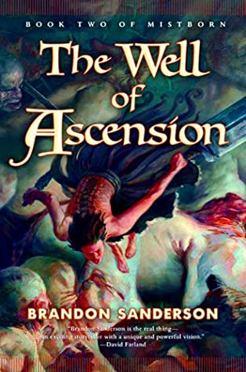
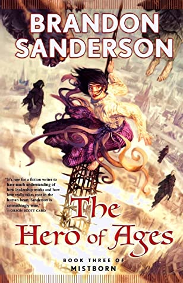
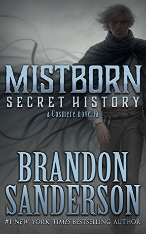
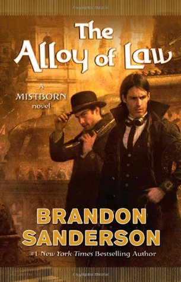
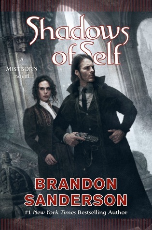
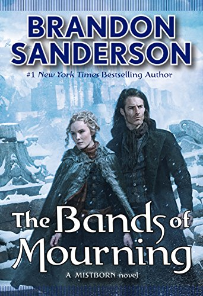

The First Mistborn Trilogy / Era 1

The Final Empire (Mistborn, #1)
For a thousand years the ash fell and no flowers bloomed. For a thousand years the Skaa slaved in misery and lived in fear. For a thousand years the Lord Ruler, the "Sliver of Infinity," reigned with absolute power and ultimate terror, divinely invincible. Then, when hope was so long lost that not even its memory remained, a terribly scarred, heart-broken half-Skaa rediscovered it in the depths of the Lord Ruler's most hellish prison. Kelsier "snapped" and found in himself the powers of a Mistborn. A brilliant thief and natural leader, he turned his talents to the ultimate caper, with the Lord Ruler himself as the mark.
Kelsier recruited the underworld's elite, the smartest and most trustworthy allomancers, each of whom shares one of his many powers, and all of whom relish a high-stakes challenge. Then Kelsier reveals his ultimate dream, not just the greatest heist in history, but the downfall of the divine despot.
But even with the best criminal crew ever assembled, Kel's plan looks more like the ultimate long shot, until luck brings a ragged girl named Vin into his life. Like him, she's a half-Skaa orphan, but she's lived a much harsher life. Vin has learned to expect betrayal from everyone she meets. She will have to learn trust if Kel is to help her master powers of which she never dreamed.
Brandon Sanderson, fantasy's newest master tale-spinner and author of the acclaimed debut Elantris, dares to turn a genre on its head by asking a simple question: What if the prophesied hero failed to defeat the Dark Lord? The answer will be found in the Misborn Trilogy, a saga of surprises that begins with the book in your hands. Fantasy will never be the same again
Goodreads Page
Amazon Store

The Well of Ascension (Mistborn, #2)
The impossible has been accomplished. The Lord Ruler--the man who claimed to be god incarnate and brutally ruled the world for a thousand years--has been vanquished. But Kelsier, the hero who masterminded that triumph, is dead too, and now the awesome task of building a new world has been left to his young protégé, Vin, the former street urchin who is now the most powerful Mistborn in the land, and to the idealistic young nobleman she loves.
As Kelsier's protégé and slayer of the Lord Ruler she is now venerated by a budding new religion, a distinction that makes her intensely uncomfortable. Even more worrying, the mists have begun behaving strangely since the Lord Ruler died, and seem to harbor a strange vaporous entity that haunts her.
Stopping assassins may keep Vin's Mistborn skills sharp, but it's the least of her problems. Luthadel, the largest city of the former empire, doesn't run itself, and Vin and the other members of Kelsier's crew, who lead the revolution, must learn a whole new set of practical and political skills to help. It certainly won't get easier with three armies - one of them composed of ferocious giants - now vying to conquer the city, and no sign of the Lord Ruler's hidden cache of atium, the rarest and most powerful allomantic metal.
As the siege of Luthadel tightens, an ancient legend seems to offer a glimmer of hope. But even if it really exists, no one knows where to find the Well of Ascension or what manner of power it bestows.
Goodreads Page
Amazon Store

The Hero of Ages (Mistborn, #3)
To end the Final Empire and restore freedom, Vin killed the Lord Ruler. But as a result, the Deepness--the lethal form of the ubiquitous mists--is back, along with increasingly heavy ashfalls and ever more powerful earthquakes. Humanity appears to be doomed.
Having escaped death at the climax of The Well of Ascension only by becoming a Mistborn himself, Emperor Elend Venture hopes to find clues left behind by the Lord Ruler that will allow him to save the world. Vin is consumed with guilt at having been tricked into releasing the mystic force known as Ruin from the Well. Ruin wants to end the world, and its near omniscience and ability to warp reality make stopping it seem impossible. Vin can't even discuss it with Elend lest Ruin learn their plans!
Goodreads Page
Amazon Store

Secret History (Mistborn, #3.5)
Mistborn: Secret History is a companion story to the original Mistborn trilogy. As such, it contains HUGE SPOILERS for the books Mistborn (The Final Empire), The Well of Ascension, and The Hero of Ages. It also contains very minor spoilers for the book The Bands of Mourning. Mistborn: Secret History builds upon the characterization, events, and worldbuilding of the original trilogy. Reading it without that background will be a confusing process at best. In short, this isn't the place to start your journey into Mistborn. (Though if you have read the trilogy--but it has been a while--you should be just fine, so long as you remember the characters and the general plot of the books.) Saying anything more here risks revealing too much. Even knowledge of this story's existence is, in a way, a spoiler. There's always another secret
Goodreads Page
Amazon Store
Wax and Wayne Series / Era 2

The Alloy of Law (Mistborn, #4)
Three hundred years after the events of the Mistborn trilogy, Scadrial is now on the verge of modernity, with railroads to supplement the canals, electric lighting in the streets and the homes of the wealthy, and the first steel-framed skyscrapers racing for the clouds.
Kelsier, Vin, Elend, Sazed, Spook, and the rest are now part of history--or religion. Yet even as science and technology are reaching new heights, the old magics of Allomancy and Feruchemy continue to play a role in this reborn world. Out in the frontier lands known as the Roughs, they are crucial tools for the brave men and women attempting to establish order and justice.
One such is Waxillium Ladrian, a rare Twinborn who can Push on metals with his Allomancy and use Feruchemy to become lighter or heavier at will.
After twenty years in the Roughs, Wax has been forced by family tragedy to return to the metropolis of Elendel. Now he must reluctantly put away his guns and assume the duties and dignity incumbent upon the head of a noble house. Or so he thinks, until he learns the hard way that the mansions and elegant tree-lined streets of the city can be even more dangerous than the dusty plains of the Roughs.
Goodreads Page
Amazon Store

Shadows of Self (Mistborn, #5)
Shadows of Self shows Mistborn's society evolving as technology and magic mix, the economy grows, democracy contends with corruption, and religion becomes a growing cultural force, with four faiths competing for converts.
This bustling, optimistic, but still shaky society now faces its first instance of terrorism, crimes intended to stir up labor strife and religious conflict. Wax and Wayne, assisted by the lovely, brilliant Marasi, must unravel the conspiracy before civil strife stops Scadrial's progress in its tracks.
Shadows of Self will give fans of The Alloy of Law everything they've been hoping for and, this being a Brandon Sanderson book, more, much more.
Goodreads Page
Amazon Store

Bands of Mourning (Mistborn, #6)
Three hundred years after the events of the Mistborn trilogy, Scadrial is now on the verge of modernity, with railroads to supplement the canals, electric lighting in the streets and the homes of the wealthy, and the first steel-framed skyscrapers racing for the clouds.
The Bands of Mourning are the mythical metal minds owned by the Lord Ruler, said to grant anyone who wears them the powers that the Lord Ruler had at his command. Hardly anyone thinks they really exist. A kandra researcher has returned to Elendel with images that seem to depict the Bands, as well as writings in a language that no one can read. Waxillium Ladrian is recruited to travel south to the city of New Seran to investigate. Along the way he discovers hints that point to the true goals of his uncle Edwarn and the shadowy organization known as The Set.
Goodreads Page
Amazon Store
NOTE: The cover images of the books in this page is rightfully owned by these artists:
Chris McGrath and
Jon Foster